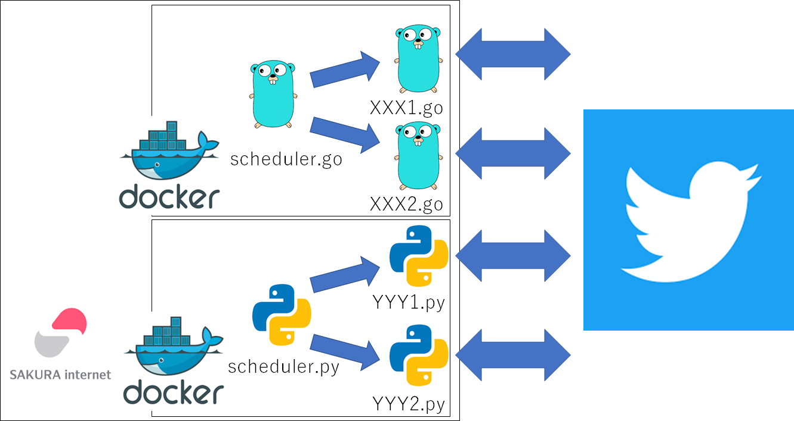

コンテナ化
Tweetホーム > 個人開発したことまとめ > コンテナ化
コンテナ化
新しく配属されたプロジェクトで Docker や GitLab で自動リリース機能構築(CD)など、これまで触れたことのない技術が大量にあったので、それらを使用することで少しでも早くその技術に慣れ、使いこなせるようになりたかった。
どんな仕組み？

Go の bot を動かすイメージと python の bot を動かすイメージで分けている。
Dockerfile(python)
Dockerfile(Go)
ぶつかった壁とか学んだこととか
①コンテナサイズがでかい
最初はコンテナに go/python のファイルをそのまま配置して動かしていた。その際のコンテナサイズは以下。
- Go：941MB （使用したイメージは golang:1.17）
- python：1.59GB （使用したイメージは python:3.10）
ソースファイルをそのまま配置して実行する場合、その環境には Go/python など、実行に必要なものがインストールされている必要がある。しかし Go には build というコマンドがあり、コンパイルして実行ファイルを生成することが可能。この実行ファイルはそれ単体で動かすことができるため、対象の環境に Go がインストールされていなくても動かすことができる（build を実行する環境には必要）。
これを使用すれば、実行するコンテナに Go がインストールされている必要はないため、より軽量なコンテナイメージを使用することができる。
また、 build 時のコマンドの指定によってクロスコンパイル可能。例えば Windows 環境で build して linux 用のバイナリファイルを生成することができる。
使用するイメージを golang:1.17 から alpine:3.15 に変更した結果、イメージのサイズは 941MB から 19.6MB に減少。
python にも PyInstaller というモノがあり、これを使えばバイナリ化することは可能。しかし Go build と違って PyInstaller は python の標準機能ではない。また、クロスコンパイルはできない（これをちゃんと理解していなかったので自動リリース機能構築の際にはまった）。
PyInstaller を使ってバイナリファイルを生成し、実行環境を python:3.10 から debian:11.3 に変更（※）した結果、イメージのサイズは 1.59GB から 63.4MB に減少。
※ alpine を使えばもっと軽量化できたと思います。 debian にしたのには深い意味はありません。違う形式のモノにした方が勉強になることがあるかも？と思った程度です。
Go
- GO コマンド
- Go/実行の方法
- 1.3 Goのコマンド
- 【備忘】Go 言語のビルドと実行（３パターン）
- go buildのオプションを調べてみた
- パッケージ名を指定してgo buildしよう
- go buildとクロスコンパイル
- PyInstaller
- 【超簡単】Python プログラムを pyinstaller で EXE化しよう
- Pythonスクリプトをexe化する
- PyInstallerでexeファイル化
- PyInstallerでPythonをexe化！ライブラリの比較、注意点も解説
- 【ファイル参照】pyinstaller configファイルの読み込み
- 【Python】Pythonファイルを実行ファイルに変換する方法【exe化】
②python バイナリ化したらエラー
Pyinstaller でバイナリ化したらコンテナ起動時に以下エラー発生。
Traceback (most recent call last):
File "pythonscheduler.py", line 56, in <module>
File "schedule/__init__.py", line 780, in run_pending
File "schedule/__init__.py", line 100, in run_pending
File "schedule/__init__.py", line 172, in _run_job
File "schedule/__init__.py", line 661, in run
File "regularly_check/dailyCheck.py", line 461, in dailyRemind
File "regularly_check/dailyCheck.py", line 248, in tweetContentsControl
File "regularly_check/dailyCheck.py", line 83, in event_info
File "tweepy/api.py", line 3493, in media_upload
File "imghdr.py", line 16, in what
FileNotFoundError: [Errno 2] No such file or directory: 'regularly_check/img/events/jusei_btl.png'
[7] Failed to execute script 'pythonscheduler' due to unhandled exception!
このサイトを参考に以下のコードを追加
ssl._create_default_https_context = ssl._create_unverified_context
これで一応動くようにはなったけど、セキュリティ上はよくなさそう（参考）。
アクセスしてるのは自分の GitHub と twitter なので大丈夫だとは思うが、以下の対応の方が良さそうなので今度試してみる（参考）。
pip install --upgrade certifi
これでもダメなら以下。
参考
- SSL証明書が正しくないサイトに対してPythonでアクセスする
- [python] Requestsモジュール使用時に”urlopen error [SSL: CERTIFICATE_VERIFY_FAILED]”となるエラーの解決法
- 【python3】python3系でurllibのエラーが出た時の対処
③apt？yum？？apk？？？
コンテナ化するにあたり、パッケージをインストールする際のコマンドが apt だったり yum だったり apk だったりして何が何だかわからず超混乱した。この記事を見てやっとわかったんだけど、パッケージファイル形式によってコマンドが違うのですね。。。
| パッケージファイル形式 | ディストリビューション | パッケージ管理コマンド |
|---|---|---|
| Red Hat形式(.rpm) | Red Hat Enterprise Linux, CentOs | rpm、yumコマンド |
| Debian形式(.deb) | Debian GNU, Ubuntu | dpkg、APT系コマンド |
apk は？？と思ったら apk は Alpine Linux で使用できるパッケージ管理コマンドだそうな（参考 ）。なるほど。
さくらインターネットでレンタルしてるサーバは CentOS なので yum。python のイメージは debian なので apt。Go のイメージは Alpine なので apk なのですね。。。
余談ですが、
yum は Yellowdog Updater Modified
apt は Advanced Package Tool
apk は Alpine Linux Package Management の略らしいです。
参考
Go
- Alpineのapkコマンドとaptの違いまとめ
- #docker alpine のデメリットは yum や apt-get がなくて apk っていう Alpine 専用パッケージ管理システムを使う必要があるところ、かな？
- yumとapt-getの違い
- yumとaptコマンドの違いとは？ linuxのパッケージ管理
- Alpine Linuxのapkコマンドでインストール可能なパッケージを検索する方法
- yumコマンドとAPT系コマンドの違い
- index : apk-tools
④timezone の設定の仕方がわからない
レンタルしている linux サーバの timezone は初めからJST
自分で設定した覚えはないので多分最初からこうなっていた。このため、これまで特段何も意識せずに JST で動いていた。コンテナ化するにあたり、デフォルトは大概 UTC なので、設定を自分で変更する必要があった。
Alpine × Goの場合
この記事が凄くわかりやすいのですが、 Go は「time.FixedLocation」という関数を使用すれば、コンテナのタイムゾーンを変更しなくても、アプリ内でJSTとして扱うことはできるらしいです。「time.LoadLocation」という関数を使用した場合はコンテナ内に zoneinfo が必要です。
自作した Go の bot は time.FixedLocation を使っているので zoneinfo は不要なのですが、コンテナ内に入って何か調べる時に timezone が合ってないと混乱しそうなので合わせておきます。
timezone を変更するには、 /etc/localtime を設定したい zoneinfo に変更すればよいのですが、Alpine にはデフォルトでは zoneinfo は用意されていません。apk で tzdata パッケージをインストールする必要があります。
Dockerfile に以下コマンドを書きましょう。
cp /usr/share/zoneinfo/Asia/Tokyo /etc/localtime
apk del tzdata && \
Debian × pythonの場合
Debian には初めから zoneinfo があるので、 /etc/localtime に Asia/Tokyo をコピーすることで timezone を JST に変更することが可能。
Go と違って python のスケジューラは timezone を指定していないので、実行している環境に依存している。なので Dockerfile に以下コマンドを書いて timezone を設定した。
参考までに、python のスケジューラのソースコードはこちら。
参考
Go, Alpine
- コンテナのzoneinfoとGoのLocationについて
- Alpine Linuxで時刻をJSTに設定する(Dockerfile)
- Setting the timezone
- Alpine Linux でタイムゾーンを変更する
- apk --updateという引数はない
⑤コンテナからホストのDBにアクセス
コンテナから postgres にアクセスしようとすると以下のエラーが発生して接続できない
File "/pythonscheduler.py", line 27, in
schedule.run_pending()
File "/usr/local/lib/python3.10/site-packages/schedule/__init__.py", line 780, in run_pending
default_scheduler.run_pending()
File "/usr/local/lib/python3.10/site-packages/schedule/__init__.py", line 100, in run_pending
self._run_job(job)
File "/usr/local/lib/python3.10/site-packages/schedule/__init__.py", line 172, in _run_job
ret = job.run()
File "/usr/local/lib/python3.10/site-packages/schedule/__init__.py", line 661, in run
ret = self.job_func()
File "/account_info/record_account_info.py", line 16, in recordAccInfo
conn = psycopg2.connect(
File "/usr/local/lib/python3.10/site-packages/psycopg2/__init__.py", line 122, in connect
conn = _connect(dsn, connection_factory=connection_factory, **kwasync)
psycopg2.OperationalError: could not connect to server: Connection refused
Is the server running on host "localhost" (127.0.0.1) and accepting
TCP/IP connections on port 5432?
could not connect to server: Network is unreachable
Is the server running on host "localhost" (::1) and accepting
TCP/IP connections on port 5432?
postgres には 「pg_hba.conf」 というファイルがあり、アクセス可能な ipアドレスのリストが書かれている。
host all all 0.0.0.0/0 trust
また、「postgresql.conf」の listen_addresses を「'localhost'」から「'*'」に変更
元々 localhost からのアクセスのみを許可していたが、どこからでもアクセスできるようにした。
この後 postgres を再起動したらOK
systemctl status postgresql-9.5.service
参考
⑥PythonでOpenCVを使用する場合に必要なライブラリをinstall
コンテナ起動時に以下のエラーが発生
OpenCV を動かすにあたって必要なモジュール (libgl1-mesa-dev) が入っていないらしい（参考記事）。
Dockerfile に以下記述追加して解決。
RUN apt-get install -y libgl1-mesa-dev
参考
- Cannot import cv2 module.
- OpenGLとは？OpenGLの基礎をわかりやすく解説！OpenGLのメリットは？導入手順とバージョン確認の方法も確認
- DockerのOpenCVでImportError: libGL.so.1: cannot open shared object file
- free implementation of the OpenGL API -- GLX development files